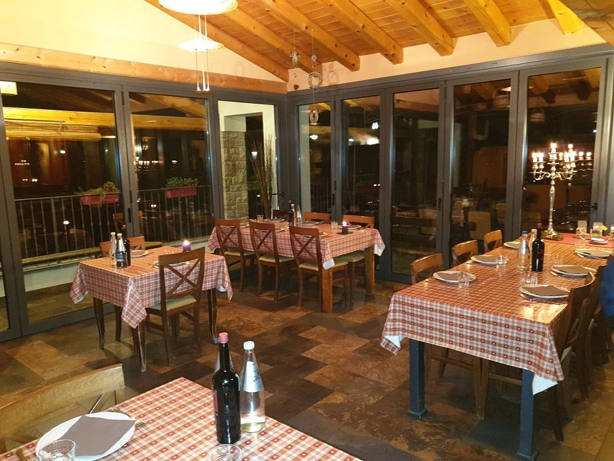
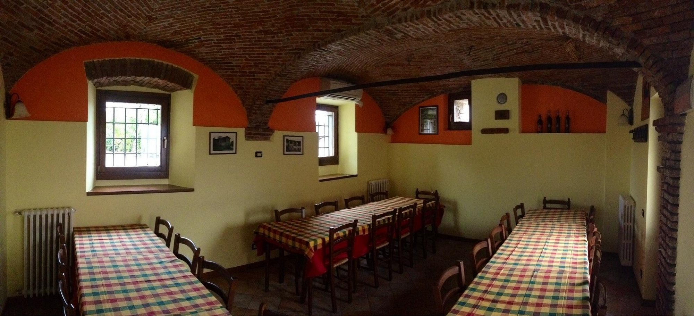
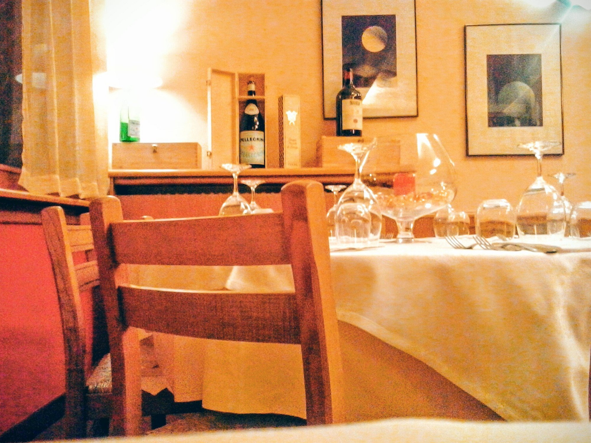
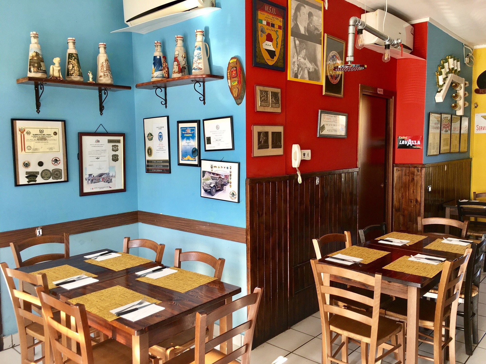
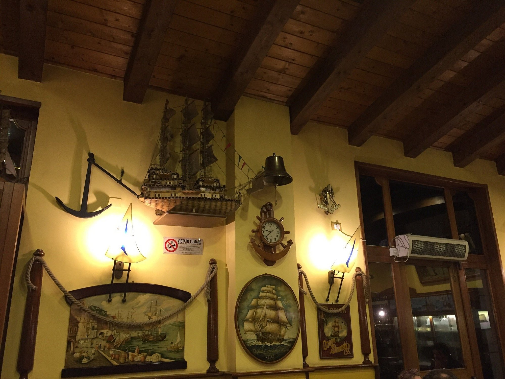

I 5 migliori ristoranti di Scanzorosciate
Agriturismo Cascina del Frances

Un luogo dove la tradizione incontra la tranquillità della campagna. La Cascina del Frances propone una cucina genuina, legata ai sapori del territorio, in un ambiente rustico e accogliente, ideale per chi cerca autenticità e relax.
Se sei interessato a prenotare un tavolo, compila il seguente form
Agriturismo Cerri

Immerso nel verde, l’Agriturismo Cerri valorizza i prodotti locali e le ricette della tradizione. Un’esperienza culinaria che unisce semplicità, qualità e un forte legame con la terra.
Se sei interessato a prenotare un tavolo, compila il seguente form
Ristorante Cavallino

Storico punto di riferimento della zona, il Ristorante Cavallino offre una cucina curata e ricca di sapori, con piatti che spaziano tra tradizione e proposte classiche, in un’atmosfera familiare e raffinata.
Se sei interessato a prenotare un tavolo, compila il seguente form
Premiata Pizzeria

Sinonimo di qualità e gusto, la Premiata Pizzeria è apprezzata per le sue pizze preparate con ingredienti selezionati e impasti curati. Un locale ideale per una cena informale senza rinunciare all’eccellenza.
Se sei interessato a prenotare un tavolo, compila il seguente form
Ristorante Il Veliero

Ristorante dal carattere deciso, Il Veliero propone una cucina ricercata, con particolare attenzione ai piatti di pesce e alle materie prime. Un ambiente elegante, perfetto per occasioni speciali e cene di qualità.
Se sei interessato a prenotare un tavolo, compila il seguente form